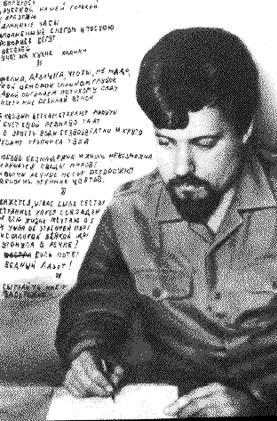

Поезія Леоніда Кисельова
Ярослав Розумний.
Професор Манітобського університету (Канада), відомий літературознавець і критик:
ЛЕОНІД КИСЕЛЬОВ -- ФЕНОМЕН ПОЕТИЧНИЙ ЧИ ПСИХОЛОГІЧНИЙ?

Цигарочка
Дударик
І мати молода, і сонце юне
Катерина
Мій щур такий любесенький...
На терасах дерев...
Не бийте журавля!
Не йму віри політикам...
НІЧ У КРАКОВІ
ПОХОРОН ОФЕЛІЇ
Рано ще, рано.
Стати б хоч на менти лічені...
Так, вона залізна...
Тільки двічі живемо...
В камені, в дереві, на папері...
Він був як полум'я.
Вона приходила щоранку...
Як у нашому селі...
Заспівайте, сестро, заспівайте...
Згадаєш їжака,що я приніс...
З ЛИСТА ДЖОНАТАНА ЯРЕМИ СВІФТА
БУРАТИНО
Деревья не платят за платья...
КОСМИЧЕСКИЙ ТРАМВАЙ
Квартал забором обнесен...
Молишься и веришь. Даль туманна...
ОЧЕНЬ ТРУДНО БЫТЬ ПОЭТОМ
ОСЕНЬ ПРИШЛА В ВОСКРЕСЕНЬЕ
Осенний вечер. Я выключил свет...
ПЕРВЫЙ СНЕГ
РАДОСТЬ
РУЧЕЙ
Слепому помогли войти в троллейбус...
СЛОВО О ПОЛКУ ИГОРЕВЕ
СОЛНЦЕ
Солнце больше не дарит обновою,..
СОНЕТ
Жил да был старый граф...
Ветер треплет листья,..
Все изменчиво! Все в движении!..
Яблоню, что растет на улице,..
Page design:
Natalia Kovaleva & Dmytro Kovalev
 ЛЕОНІД КИСЕЛЬОВ -- ФЕНОМЕН
ПОЕТИЧНИЙ ЧИ ПСИХОЛОГІЧНИЙ?
ЛЕОНІД КИСЕЛЬОВ -- ФЕНОМЕН
ПОЕТИЧНИЙ ЧИ ПСИХОЛОГІЧНИЙ?
 Page design:
Natalia Kovaleva & Dmytro Kovalev
Page design:
Natalia Kovaleva & Dmytro Kovalev